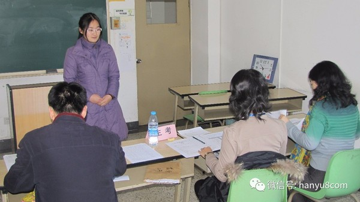
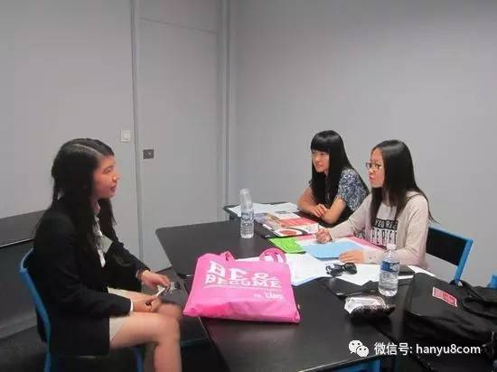
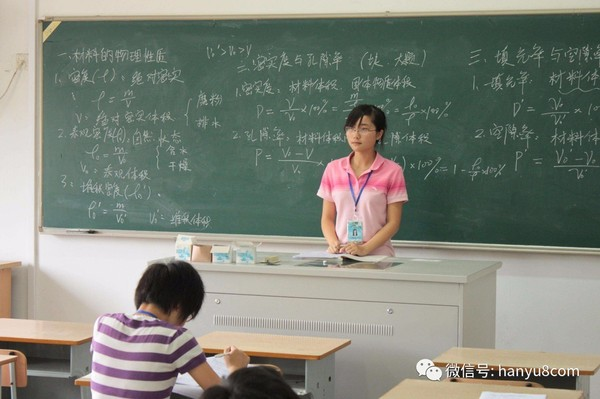
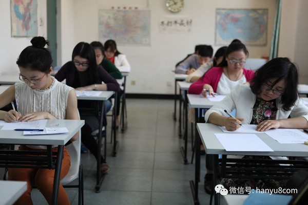

每日一篇——教师感悟/ 我的《国际汉语教师资格证》面试回忆
 1,460
1,460
报名参加了《国际汉语教师资格证》面试，一大早就起来风风火火的往北语赶，不过还是低估了北京的地铁，4号线换乘好几次都没挤上去，再加上13号线让人崩溃的“长又长”的换乘，所以差点就迟到了。大家面试的时候一定要记得打好提前量哦，千万不要像我一样，让自己一开始心里就慌慌张张的!

来到了北语教3楼的300，首先呢，工作人员会让在9：40这个时间段考试的8位考生集中在一个教室等候，先抽签看自己在哪个考场，过一会儿，工作人员带你到备考的教室，先填资料(考试的时候需要带签字笔，2B铅笔和橡皮)，然后用半个小时的时间准备考题(这里强调一下，只有一份考题，第一页是材料，一个关于同学度假之后的对话;第二页是说课的流程，步骤都已经写好了，你直接标注一些要强调的点，作为提醒就好;第三页是试讲的空白页，留着写试讲的过程;第四页是中文问答的第1道考题和临时问的第2道考题;英文问答的两道考题也都是考官临时提出的)
进了考场之后，先把刚才填图的资料交给面试老师。一共有三个考官，中间坐的是主考官，左边的是副考官，最右边的是英语考官(一说到英语考官，我就想哭，好害怕的感觉，自己会那么多单词，想说出来一个长难句子表达清楚真是难上加难)考官们真的是铁面无私，面无表情(像是在说，你快点说完吧 ，我们好回家吃饭的感觉)这个面试真的是木有互动啊，完全没有，所以自己要会演哦。
现在我来认真说说面试的流程和内容!
第一轮英语：这个是提前准备好的，2分钟的自我介绍比较好把握，不用太注意考官，就大胆的说吧，反正你从他们的表情中得不到任何的反馈，也不知道他们能不能听懂。(肯定听懂了，就是不搭理你)

第二轮说课3分钟，这是在半个小时之内就应该准备好的，不算难，按照试卷中提示的步骤把自己想怎么教说清楚就可以了，这个部分我几乎是一气呵成的，感觉都没喘气，累得够呛。(PS：由于面试的时候一定处于紧张的状态，所以语速会比平时快一些，大家要提醒自己慢一点，再慢一点，否则当你说完了，老师会提醒你，还剩时间，这时候就尴尬了，我几乎每个环节都被这样提醒，所以从开始一直尴尬到最后)

第三轮是试讲，我的材料中出现了这样几个语法：“一边….一边…””从来”和“别提多…”，由于试讲的时候最好是拿一个语法点充分的讲解和练习，所以根据时间我选择了最后一个点来讲，可是在把“别提”两层意思都讲完练完之后，考官提醒我还剩时间，所以我又补充了一个“一边，一边”。

第四轮是中文问答，试卷中的第一个问题是“一位老师去美国任教，学校安排的宿舍暖气坏了，但是负责人总是忘记这件事情，所以导致长时间没有得到修理，给老师造成了很大的困扰，问这个老师应该如何处理这个问题”，个人觉得这是一个十分开放的问题，考验老师面对问题时的心理素质和解决方法，所以只要说得在理，我觉得都会得到不错的分数。第二个考题由副考官提出，是关于很多欧美学生不想学习汉字的课堂问题，问如果你是老师，怎么做?我回答的时候主要强调了千万不能放弃学生对于汉字的学习和记忆，可以慢，但不可以没有，然后说了自己的教学经历，只有回答这一个问题的时候，我看到副考官点了点头，嘴角好像好带点微笑(不确定是赞成我的想法，还是被我举得例子逗乐了)

第五轮，也是我被虐得最惨的部分，现在想想还郁闷着呢。英语部分的考题一般都分两种，一种关于课堂管理，另一种关于跨文化交际，这两个我哪个都没说好。第一题是问我，学生在课堂上聊天，作为老师你怎么处理，我只说了应该提前建立课堂规则，奖惩分明，然后课后再找学生具体谈谈上课聊天的原因，而没有说出一些关于教学自我反思的方面，因为有可能是自己的课堂没有意思，学生觉得学不到东西，不能集中注意力这样的原因，所以在回答的时候自我反思这一点非常重要(可是我当时没说，不知道在想啥，短路了)
第二个问题简直就是车祸现场啊，因为我“没听懂”，对，就是没怎么太听懂问题，所以我先小心翼翼的请求老师再重复一遍，然后又用中文和老师确定了一下dismiss的具体意思，这时候内心就不太淡定了。他的问题是学生A把上课偷偷拍的学生B的照片传到了facebook上，结果学生B投诉了他，A最后被开除了，问我关于这件事儿我有什么看法?这其实是一道非常典型的跨文化交际的问题，考察教师在国外面对这样的文化差异会有什么样的想法以及会采取怎样的行动。歪果仁是非常注重隐私的，而我们对这方面就不是特别在意，所以答题的时候应该从中外文化思维差异去分析。结果由于没太听懂，在被老师打断了两次的情况下，我就直接说了应该如何解决问题。最后还剩一部分时间，又让我补充一些，我也没说出来个123来。
哎，英语是这次的败笔，不过没关系，我已经非常积极的通过这个来缓解了情绪，今天就和大家分享到这，真心希望如果你们去面试，一定要避开我的这些不足和错误，加油!